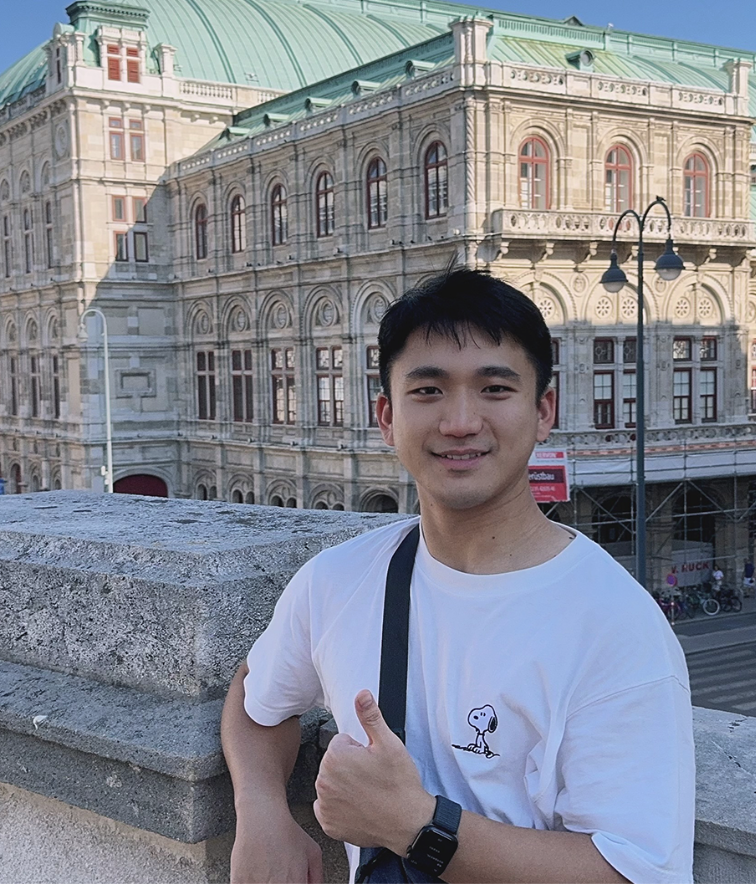
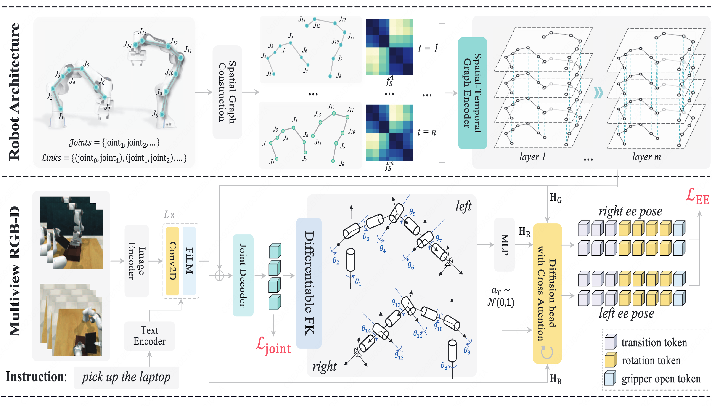
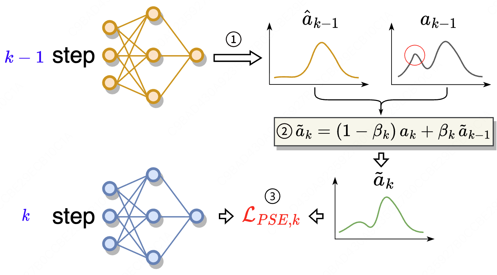
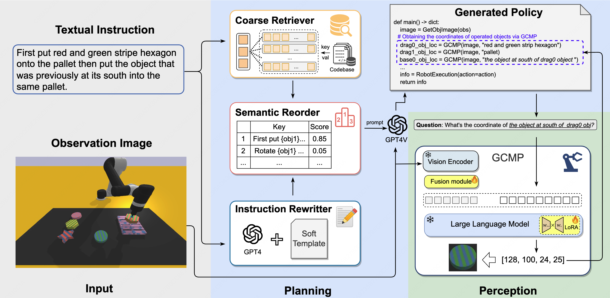

|
Qi Lv
I am a third-year Ph.D. student at Harbin Institute of Technology (Shenzhen) and Great Bay
University, advised by Liqiang Nie (IARP
Fellow), and Michael Yu Wang
(IEEE/ASME/HKIE Fellow), and co-supervised by Xiang Deng.
Currently I am a visiting student at the National University of Singapore, working with Mike Shou.
Before, I received M.S and B.E from Soochow University.
|
 |
{kind=link}
Selected Publications
(
|
|
|
F1: A Vision-Language-Action Model Bridging Understanding and Generation to Actions
Qi Lv arxiv, 2025 project page / arXiv / code A novel paradigm integrating visual foresight generation into the decision-making pipeline, enabling robots to plan and execute complex tasks in dynamic environments. |
|
|
STAR: Learning Diverse Robot Skill Abstractions through Rotation-Augmented Vector Quantization
Hao Li, Qi Lv, Rui Shao, Xiang Deng, Yinchuan Li, Jianye Hao, Liqiang Nie, ICML, 2025, Spotlight arXiv / code A framework for robust skill learning and composition that mitigates codebook collapse and models causal dependencies between skills, by introducing rotation-augmented skill quantization and a causal skill transformer. |
|

|
Spatial-Temporal Graph Diffusion Policy with Kinematic Modeling for Bimanual Robotic Manipulation
Qi Lv, Hao Li, Xiang Deng, Rui Shao, Yinchuan Li, Jianye Hao, Longxiang Gao, Michael Yu Wang, Liqiang Nie CVPR, 2025 arXiv KStar Diffuser leverages dynamic spatial-temporal robot graphs and differentiable kinematics to produce physically feasible, structure-aware bimanual manipulation policies. |
|
|
3D-AffordanceLLM: Harnessing Large Language Models for Open-Vocabulary Affordance Detection in 3D Worlds
Hengshuo Chu, Xiang Deng, Qi Lv, Xiaoyang Chen, Yinchuan Li, Jianye Hao, Liqiang Nie, ICLR, 2025 arXiv We formulates 3D affordance detection as a language-driven reasoning task for open-world scenes. By integrating LLM reasoning and multi-stage training, it achieves improved open-vocabulary affordance segmentation. |
|

|
Decision Mamba: A Multi-Grained State Space Model with Self-Evolution Regularization for Offline RL
Qi Lv, Xiang Deng, Gongwei Chen, Michael Yu Wang, Liqiang Nie NeurIPS, 2024 arXiv / code We introduces a novel multi-grained Mamba architecture that jointly models historical hidden states and intra-step RTG–state–action relations, enabling more robust offline RL under out-of-distribution settings. |
|

|
RoboMP2: A Robotic Multimodal Perception-Planning Framework with Multimodal Large Language Models
Qi Lv, Hao Li, Xiang Deng, Rui Shao, Michael Yu Wang, Liqiang Nie ICML, 2024 project page / arXiv / code A multimodal perception–planning framework that grounds MLLM reasoning in embodied robotic manipulation. It improves generalization by combining goal-conditioned perception with retrieval-augmented planning. |
Education & Experience |
|
•
Harbin Institute of Technology (Shenzhen)
2023.09 - Present
Ph.D. in Electronic Information, School of Computer Science and Technology
Advised by Liqiang Nie and Xiang Deng |
|
•
Great Bay University
2023.09 - Present
Ph.D. in Electronic Information, School of Engineering
Advised by Michael Yu Wang |
|
•
National University of Singapore
2025.10 - Present
Visiting student, College of Design and Engineering
Advised by Mike Shou |
|
•
Soochow University
2020.09 - 2023.06
M.S. in Computer Science and Technology, School of Computer Science and Technology
Advised by Guohong Fu |
|
•
Soochow University
2014.09 - 2018.06
B.S. in Software Engineering, School of Computer Science and Technology
|
|
Last updated: January 2026 Template by Jon Barron. |